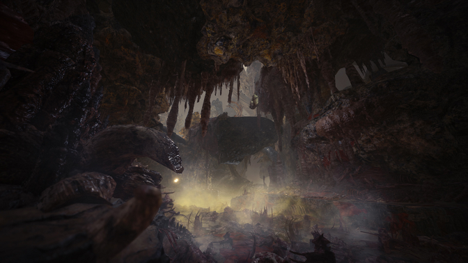
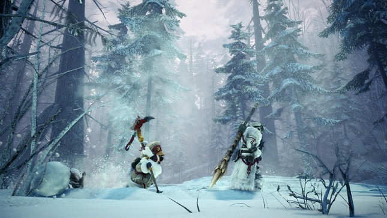
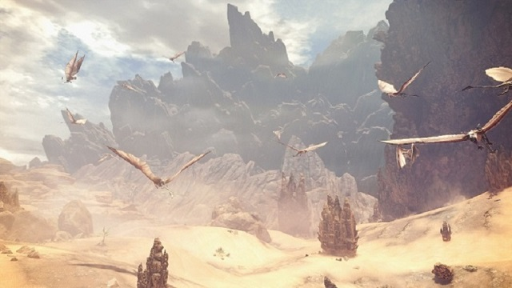
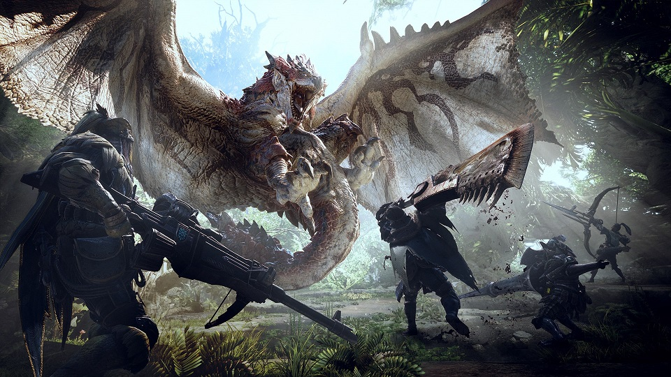
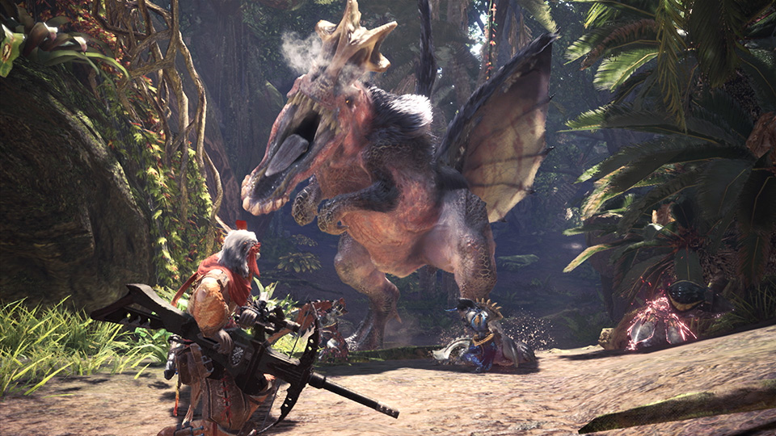
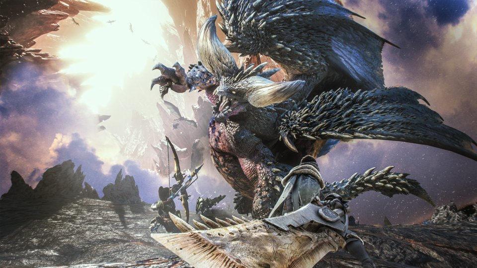
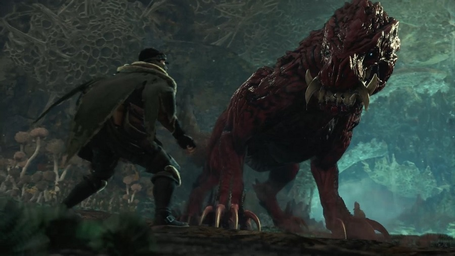

Présentation
Monster Hunter World est un jeu vidéo d'action-aventure développé et édité par Capcom. Il est sorti en 2018 sur PlayStation 4, Xbox One et PC. Le jeu se déroule dans un monde fantastique où les joueurs chassent et combattent de puissantes créatures appelées "monstres". Les joueurs incarnent des chasseurs qui se rendent dans différentes zones pour explorer et traquer les monstres, tout en rassemblant des ressources pour fabriquer de nouvelles armes et armures. En septembre 2019, une extension majeure appelée "Iceborne" a été publiée pour Monster Hunter World. Cette extension ajoute de nouveaux monstres, des armes et des armures. - Un monde ouvert : Monster Hunter World offre un vaste monde ouvert où les joueurs peuvent se déplacer librement pour explorer différents environnements, chercher des ressources, traquer des monstres et accomplir des quêtes. Le monde est riche en détails et en vie sauvage, offrant une expérience immersive pour les joueurs. - Un système de combat riche : Le jeu offre un système de combat riche et complexe, où les joueurs doivent être stratégiques dans leur choix d'armes et de stratégies de combats pour vaincre les monstres. Les monstres ont des comportements différents et des faiblesses spécifiques, ce qui nécessite une approche différente pour chaque combat. Les joueurs peuvent également utiliser des pièges et des gadgets pour aider à vaincre les monstres. - Un système d'équipement profond : Les joueurs peuvent fabriquer et améliorer une grande variété d'armes et d'armures en utilisant des matériaux collectés auprès des monstres vaincus. chaque équipement offre des statistiques différentes et peut être personnalisé avec des décorations pour offrir des bonus supplémentaires. Les joueurs peuvent également utiliser des objets tels que des potions, des pièges et des bombes pour aider à vaincre les monstres. - Une communauté en ligne active : Monster Hunter World offre un mode multijoueur en ligne où les joueurs peuvent rejoindre des quêtes avec d'autres joueurs.
Biome
Dans Monster Hunter World, les joueurs ont la possibilité de parcourir différents biomes, chacun avec son propre environnement et sa faune unique. Les biomes comprennent la forêt ancienne, le marais putride, le désert des écailles brûlantes, les montagnes enneigées de la toundra, la mer de corail et la terre sauvage du rassemblement. Chaque biome a ses propres défis, ses monstres spécifiques et ses ressources uniques à collecter. Les joueurs doivent s'adapter aux différents environnements et utiliser les pièges, les gadgets et les armes appropriées . Les biomes sont conçus avec une grande attention aux détails, offrant des paysages magnifiques et variés qui ajoutent à l'immersion dans le monde du jeu.





Monstre
Les monstres dans Monster Hunter World sont l'élément central du jeu. Il y a une grande variété de monstres, allant des petits herbivores aux énormes dragons. Chaque monstre a ses propres caractéristiques et faiblesses, offrant des défis différents pour les joueurs. Certains monstres volent dans les airs, tandis que d'autres se cachent dans l'eau ou se cachent sous terre. Les monstres ont également des attaques différentes, allant de la simple attaque à la morsure, aux attaques à distance telles que le crachat de feu ou l'utilisation de projectiles. Les joueurs doivent apprendre à connaître les habitudes de chaque monstre pour pouvoir les vaincre avec succès et récolter les matériaux nécessaires pour fabriquer de nouvelles armes et armures. Les monstres sont conçus avec un grand souci du détail. - Rathalos : un dragon rouge qui peut voler dans les airs et cracher du feu. Il est considéré comme l'un des monstres les plus emblématiques de la série Monster Hunter.

- Anjanath : un grand dinosaure qui utilise ses mâchoires puissantes et ses griffes pour attaquer. Il est également capable de cracher du feu.
- Nergigante : un monstre féroce et agressif avec des piquants noirs sur son corps qui peut être utilisé pour infliger des dégâts dommage.
- Odogaron : un monstre féroce et rapide avec des griffes et des dents tranchantes qui peuvent infliger des coups sur ses ennemis.
- Zorah Magdaros : un monstre géant qui se déplace lentement et peut lancer des projectiles explosifs. Les joueurs doivent grimper sur son dos et attaquer ses points faibles pour le vaincre. Chaque monstre a sa propre personnalité et ses propres mouvements distinctifs, offrant une expérience unique pour les joueurs.
Chaque monstre a sa propre personnalité et ses propres mouvements distinctifs, offrant une expérience unique pour les joueurs.